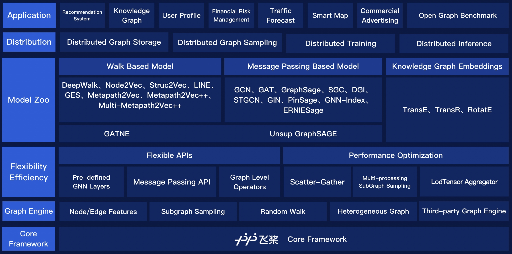

直播场景PGL落地
作为国民级的音乐APP， 网易云音乐很早之前就将定位从传统的音乐工具软件转换为音乐内容社区，连接好泛音乐产品与用户，做最懂用户的音乐APP。
而直播作为参与度较多的场景， 云音乐内部花费大量的功夫将合适的主播推荐给用户。
评论页直播推荐难点
###业务难点
如图，是评论页场景直播推荐，和经典的推荐架构，主要包括召回、粗排、精排，本次实践主要落地在召回，而在此场景，我们约到的核心问题在于阅读评论页的用户较大部分未产生过行为，因而采用传统的协同过滤类算法，由于数据极度稀疏，并不能产生较好的效果，为典型的用户冷启动问题。
###基建难点
目前云音乐的所有计算资源已完成容器化部署， 在成本考虑下， 不可能给各个业务团队，比如384G内存、8卡的计算资源来进行海量数据的图神经网络模型训练， 如何在有限的、分布式的资源调控策略下完成大规模的图神经网络的训练也是我们必须要考虑的
图神经网络如何协助落地
行为域知识迁移
所幸，并不是没有解决方法，新用户在直播场景下为新，但是在音乐、歌单、mlog，通常会有较多的行为，是否能考虑这部分的知识，来映射到直播域，提供足够的“行为”来推荐合适的主播呢？
这里我们考虑使用Graph的结构， 引入多种不同类型的实体，如歌曲、DJ、Query、RadioID等等，将用户与主播、用户与歌曲、Query与主播等等行为，统一建模在一张图中，通过经典的Graph Model如DeepWalk， Metapath2vec、GraphSAGE,学习足够强大的embedding表示，来建模各实体id，然后通过ANN召回，通过用户对歌曲、Query等等的行为迁移至主播域，召回合适的主播。
通用的分布式图神经网络解决方案
由于该场景整体数据规模较大，在经过某些规则裁剪之后， 整体数据规模约为百万级节点，亿级别边，而在很多开源方案中，这样的量级就已经开始成为瓶颈，或者使用极其昂贵的计算资源来解决， 这个对于我们现有的资源情况来说是不可能， 而在我们的规划中，这样的数据量级仅仅还只是开始，所以，我们在开始之初， 就考虑到数据规模的问题，相对于使用什么的模型，我们更关注其在工业界场景数据下是否能训练得出， 通过调研现有的开源方案，我们选择PGL作为我们基础的框架， PGL基于PaddlePaddle Fleet来支持Graph Learning中较为独特的Distributed Graph Storage、Distributed Sampling， 可以较为方便的通过上层python接口，来将graph中的存储比如Side Feature等存储在不同server上，也支持通用的分布式采样接口，将不同子图的采样分布式处理，在分布式的“瘦计算节点”上加速计算， 这对于我们是十分具有吸引力。

进展与未来规划
目前采用图计算的实验，在有效观看上提升将近6%， 在该场景下尤其是通过引入其他域数据上来解决新用户冷启动问题上，有明显提升，未来，在这块上，我们规划从以下三个方向上探索
- 模型上：目前我们已经完成包括DeepWalk（带权重）、MetaPath2Vec（带权重）、GraphSAGE直播场景的落地，后续打算引入更复杂的模型如attention 机制是否能协助解决不同实体类型对最终实体建模的贡献能力；
- 数据规模：通过不停挖掘更多行为数据、关联更多行为实体， 数据规模越来越大，从单机到分布式，PGL目前支持较为完好，后续我们打算减少数据阈值，引入更多合适的领域数据来探索是否能够进一步提升；
- 平台化能力输出：目前PGL的分布式方案尽管已在云音乐内部的机器学习平台上运行，但并未整合到提供平台化能力输出， 用户暂时无法自助运行分布式的PGL模型训练，也需要更改部分源码来适配分布式训练，后期我们打算通过制作组件以及对PGL进行封装，支持PGL训练代码无需修改代码来分布式训练；